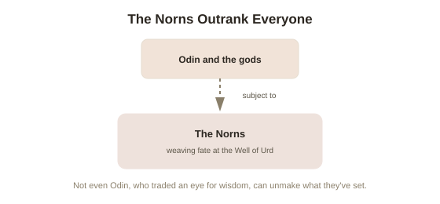

Chapter 4: The Norns — Fate That Outranks the Gods
Chapter 3 ended on a pointed question: if Thor and Jörmungandr's mutual killing at Ragnarok is already known, established fact throughout the mythology — not a possibility, a certainty — who or what actually fixed that outcome? The answer takes the story somewhere genuinely unusual for a mythology to go: not even Odin, the chief of the gods, is described as the ultimate authority over fate. Something else is.
The Norns: three figures with more authority than the gods
At the base of Yggdrasil, beside the Well of Urd (a sacred spring at the tree's roots, associated with fate and the past), live the Norns — three (sometimes described as more) female figures named Urd, Verdandi, and Skuld, whose names roughly correspond to "that which became," "that which is becoming," and "that which should become" — a structure that reads less like past, present, and future in the modern linear sense, and more like accumulated consequence, current unfolding, and inevitable obligation. The Norns are described as carving fate into wood, or weaving and spinning it as thread, tending the roots of the World Tree itself with water from their well to keep it alive. Crucially, sources describe the Norns as operating independently of the gods' authority — the Æsir do not command them, consult them for approval, or override their decisions. Odin, who traded an eye for wisdom and hung from the tree itself for nine days to learn the runes, still cannot unmake what the Norns have set.

Örlög: fate as something accumulated, not just handed down
The Old Norse concept usually translated as "fate," örlög (literally something close to "primal layer" or "that which is laid down before" — the accumulated, foundational law of how events must unfold), carries a more specific meaning than the modern English word suggests. It isn't simply an external decree imposed on passive characters from outside; it's closer to something layered and built up — every action taken adds to örlög, which then constrains what can happen next, for individuals and for the gods and the world alike. This is part of why Ragnarok isn't framed as an arbitrary punishment or a random catastrophe — it's the accumulated, inevitable outcome of every prior action across the whole mythology, including Loki's escalating betrayals from Chapter 1, finally resolving into their fixed consequence.
Knowing your fate without being freed from it
What makes the Norse treatment of fate genuinely distinctive, compared to many other mythological traditions, is that foreknowledge changes nothing about the outcome — and the myths don't treat that as a design flaw to be worked around, the way, say, Greek myth often frames prophecy as something desperate characters try (and fail) to outrun. Odin doesn't attempt to prevent Ragnarok once he learns of it; he prepares for it, gathering the einherjar in Valhalla exactly as Chapter 2 described. This is a strikingly compatibilist-flavored resolution before compatibilism had a name: the value in Norse mythology was never placed on somehow escaping örlög — nothing in the sources even entertains that as a real possibility — but on how one meets it. Facing a fixed outcome with clear eyes and full effort was treated as more honorable than facing an uncertain one with false hope, which folds directly back into the warrior-culture value system Chapter 2 already laid out.
Wyrd, and where the English language still carries this
The related concept, wyrd (the Old English cognate of the Norse concept — a person's fate as something continuously being spun or woven, rather than fixed once and never touched again), survives today in a single, slightly unexpected English word: "weird." Its original meaning had nothing to do with strangeness — it referred directly to fate, and specifically to the sense of fate as an active, ongoing process rather than a finished decree. Shakespeare's "Weird Sisters" in Macbeth are literally the Fate Sisters, a direct descendant of the same web of ideas running through the Norns. The word drifted toward "strange" or "uncanny" only much later, as the older concept of fate itself faded from everyday belief — leaving a linguistic fossil of exactly the idea this chapter has been describing, hiding in a completely ordinary modern word.
Try this
Ideas for noticing or testing this in your own life.
- Notice a situation in your own life with a fairly fixed, foreseeable outcome — and instead of asking whether it can be changed, try the Norse-mythology question instead: given that it's coming, how do you want to meet it?
- Next time you use the word "weird," notice the fossil sitting inside it — a word that used to mean fate itself, not strangeness.
Worth pulling on?
A few loose threads from this chapter — if any of these genuinely grab you, that's a good sign of where to go next.
- Everything covered across four chapters — Yggdrasil, Odin, Loki, Valhalla, the Norns — comes from a small number of medieval manuscripts, written down centuries after these were living beliefs, by people whose own relationship to the material was already complicated. → The subject of the final chapter in this topic: where this mythology actually comes from, and how much of it survived intact.
- The Norse acceptance of a fixed, foreknown outcome as something to be met rather than escaped closely parallels the ancient Stoic approach to fate, developed independently in the Mediterranean world around the same broad era. → A separate topic under Philosophy: Stoicism.